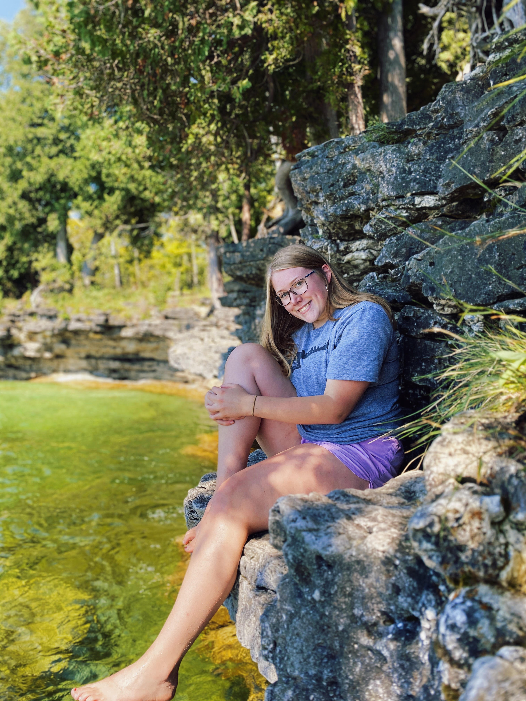

ABOUT ME!
Background
Hi everyone! My name is Emma Packard and I am a Sophomore at the University of Wisconsin-Eau Claire. I am currently an Integrated Strategic Communications major with an emphasis in Public Relations and a minor in Multimedia Communications. My hometown is Antigo, Wisconsin which a little over two hours from Eau Claire. Fun fact: I transfered to Eau Claire in fall of 2021!
Career Goals
As someone going into Communications and Public Relations, there are a few goals I hope to achieve in my career. I hope to someday work for a non-profit group or company in Public Relations. One of my biggest passions in helping others and I strive to continue this in my career!
Work Experience
I currently work on campus as a front desk team member for the Activities, Involvement, and Leadership office and as an UAC festivals chair, where I plan fun activities for students. I have also been a Youth Development Professional, reading tutor, and front desk clerk for the Boys and Girls Club of the Northwoods. Other employment opportunities I have had are a cashier at my local strawberry farm, baking for others, and two different coffee shops!
Achievements
- Dean's List all three semesters of college
- CPR and First Aid certified
- Multiple Scholarships
- 1st place in my local apple pie baking contest for years
Gallery!
Contact!
- Phone: 715-2119-3992
- Email: epackard30@gmail.com